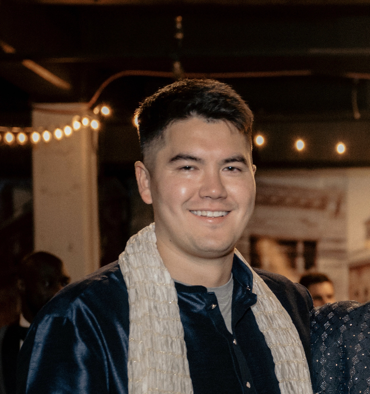

No. 01
You call.
From a reservation. From a city apartment. From the road home. The line picks up before the third ring, any hour, every day, no recording, no portal, no queue that goes cold at night.
A 24/7, Native-led nurse advice line for Indian Health Service beneficiaries. Licensed RNs. Evidence-based triage. Care that already knows who you are.
From a reservation, from a city apartment, from the road home, the call is answered by a licensed RN working from the same evidence-based protocols 95% of U.S. medical call centers use, paired with judgment that already knows the room.
From a reservation. From a city apartment. From the road home. The line picks up before the third ring, any hour, every day, no recording, no portal, no queue that goes cold at night.
Multi-state-licensed registered nurses, working from Schmitt-Thompson Clinical Content protocols, the framework 95% of U.S. medical call centers use, paired with indigenous-informed clinical judgment.
911 if it needs to be. Self-care if it should be. A warm hand-off into your IHS or Tribal Health Program if that's the right door. The call ends with a plan, not a transfer.
Built to satisfy both the contracting officer at IHS and the patient on the other end of the call.

Enrolled citizen of the Snoqualmie Indian Tribe and currently Deputy Executive Director of External Affairs for the Tribe. Previously the youngest-ever Snoqualmie Tribal Council Vice Chair (two terms). Helped advocate for the reaffirmation of the Violence Against Women Act, Savannah's Act, and the $8 billion tribal CARES Act allocation. Chaired the Tribe's Investment Committee, more than quadrupling its portfolio in two years.

Eleven-plus years treating the sickest patients in Level 1 and 2 trauma center ICUs: CVICU, Neuro-Surgical Trauma ICU, Medical ICU, and beyond, where no two shifts looked the same. Brought that same precision to telehealth, guiding acutely ill patients safely from hospital to home. Has responded to medical emergencies inside a maximum-security prison. Now leading a 142-bed SNF as Unit Manager and MDS Coordinator. He has actually carried the pager.
Tulq is built for the populations that mainstream telehealth has consistently underserved, and the institutions trying to reach them.
Eligible AI/AN patients across the 12 IHS Areas, from urban centers to the most remote service units.
Tribal health programs operating under the Indian Self-Determination and Education Assistance Act, looking to extend after-hours and surge capacity.
Urban Indian Organizations and the ~70% of AI/AN people who live in cities, where access falls through the cracks between federal and state systems.
Communities where the nearest ED is a long, expensive drive, and a phone call to a competent nurse changes what happens next.
Tulq is structurally and culturally aligned with how Indian Country actually works, not retrofitted to look the part.
Wholly owned by Michael Chavez Ross, enrolled citizen of the Snoqualmie Indian Tribe. Eligible to compete as an Indian Economic Enterprise under 25 U.S.C. § 47.
Eleven-plus years of trauma center ICU, Kaiser Hospital-at-Home telehealth, supermax corrections triage, and SNF leadership, directed by a nurse who has actually carried the pager.
Cultural competency built in at the protocol level, not bolted on at training. Informed by tribal governance experience, lineage, and lived understanding.
The numbers below are why the line exists. They are not decoration.
Tulq takes its name from tultxʷ, the Lushootseed word the Snoqualmie people use for the place where the Tolt and Snoqualmie rivers come together. It is a word about meeting. Two currents, one water.
Tulq exists, in part, because of what it took to survive that. The line we answer today is part of how that gets repaired.
Read the full storyFor contracting officers, partnership inquiries, and clinical questions: reach out directly. We answer our own phones.
NAICS & UEI registered. SAM.gov ready. Buy Indian Act qualification documentation furnished on contracting officer request.